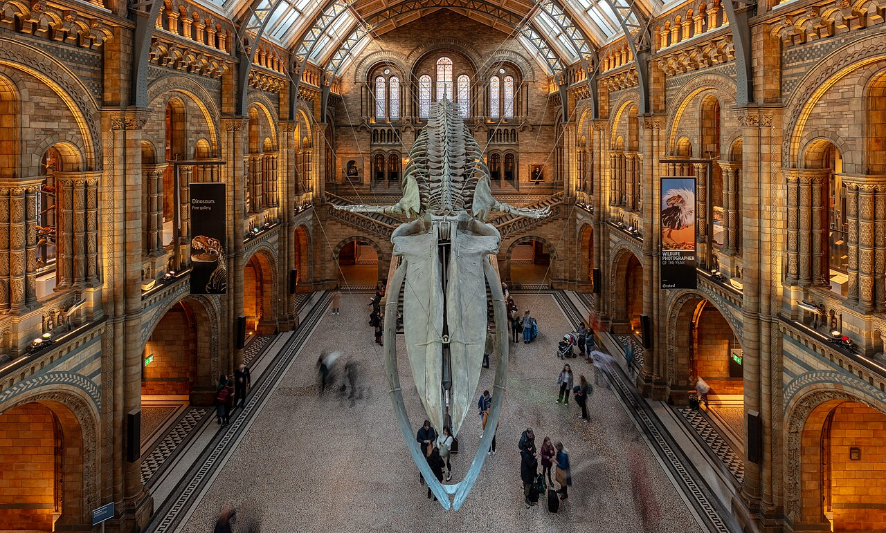

South Kensington
Lower recorded crime
Families
Walk to the Natural History Museum, Science Museum and V&A - all free. Leafy, residential and well connected on three Tube lines.
1,166 crimes a month nearby · 23% theft · 21% violence or robbery
Via Happy to Wander, Sophie Nadeau